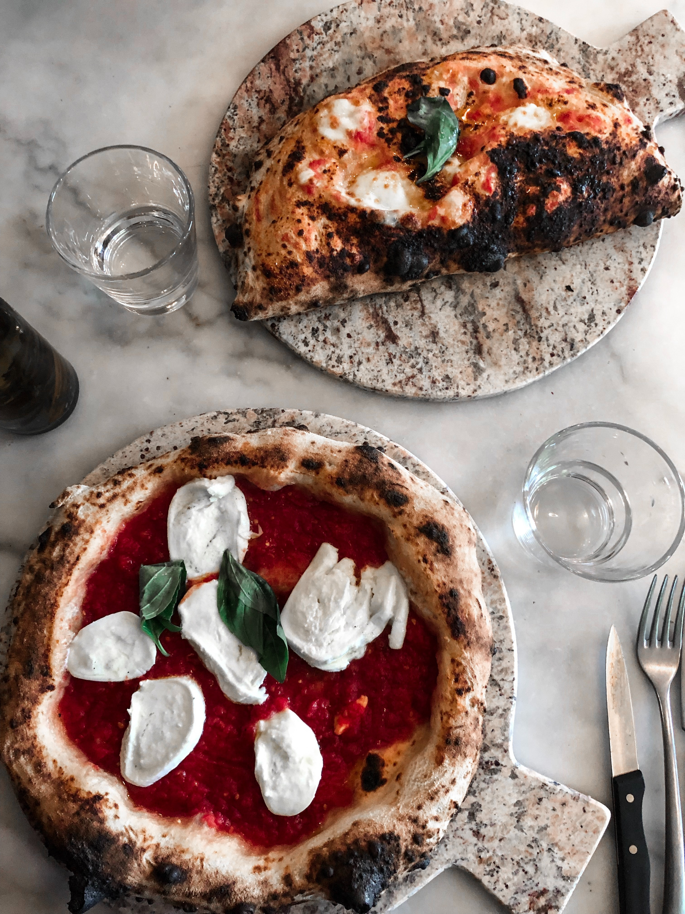

Pizza With Fig Preserves

Description
Pizza! Let me tell you something pretty pimp about this pizza. The time it takes you to preheat the oven is the same amount of time it takes to sauté the chicken sausages. Gold star right there.
The rest of the meal is pantry staples. Sort of. The fig spread came in a jar. The caramelized onions were leftovers from the day before. The cheese is a duh situation. The pizza dough was from Trader Joe’s. Gold star gold star gold star gold star.
Ingredients List
- 1 lb premade pizza dough
- 1 cup jarred fig preserves
- 1 cup carmalized onions
- 2-3 chicken sausages sliced thinly
- 2 cups shredded mozzarella cheese
- thinly sliced chives for garnish
Recipe Instructions
- Preheat oven (and a pizza stone) to 400.
- Top your dough with the fig spread, onions, chicken sausages and half the cheese. Slide onto the pizza stone and bake until the cheese is browned and bubbly, and the dough is cooked through, 10-17 minutes. (depending on your oven) Repeat with remaining pizza.
- Garnish with chives!